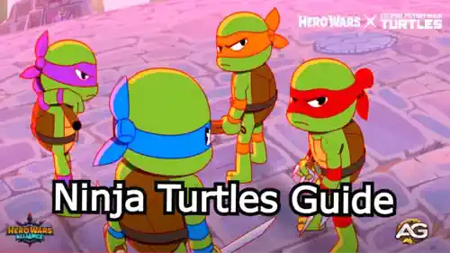
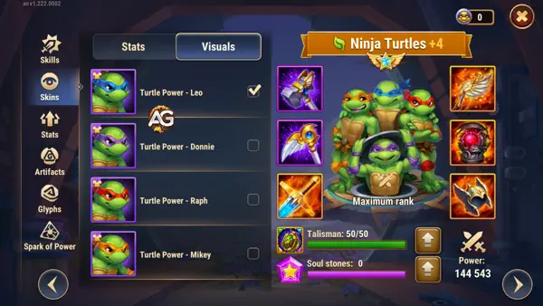
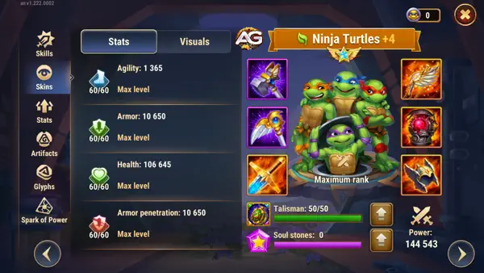
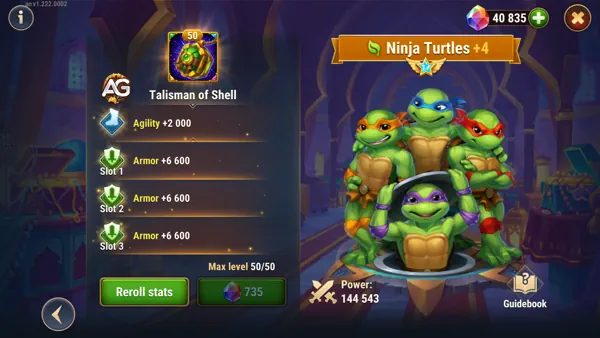

A chegada das Tartarugas Ninja em Hero Wars Mobile introduziu uma mecânica inovadora e poderosa ao jogo. Esses heróis lendários, amplamente testados pelo jogador especialista Alexandre Games, já provaram seu valor como uma adição de alto nível ao elenco.
Alexandre destacou o imenso poder e a versatilidade estratégica das Tartarugas, descrevendo-as como um herói que parece ter “2 a 3 personagens extras lutando ao seu lado.” A sinergia das Tartarugas Ninja com os heróis da facção Natureza e Eternidade, como Oya, Alvanor, Elmir, Dante e Octavia, cria equipes formidáveis baseadas em esquiva, capazes de enfrentar até mesmo as formações mais fortes do meta.
As Tartarugas se destacam em adaptabilidade, tornando-se uma força revolucionária. No entanto, como qualquer herói, elas apresentam alguns desafios, como a perda do buff Equilíbrio da Nebulosa durante as trocas de posição. Vamos nos aprofundar em suas habilidades, estatísticas e as melhores formações de equipe para maximizar seu potencial.
Visão Geral das Tartarugas Ninja
As Tartarugas Ninja trazem seu único Poder das Tartarugas para o Hero Wars, combinando capacidades ofensivas e defensivas em um único herói. Com um pool de vida compartilhado, mecânicas de combate baseadas em rotação e a habilidade de atrapalhar os inimigos enquanto apoiam aliados, as Tartarugas são uma escolha versátil para qualquer cenário de batalha.

Ilustração dos personagens das Tartarugas Ninja do jogo Hero Wars Alliance, desenvolvido pela Nexters.
Principais Estatísticas das Tartarugas Ninja em Hero Wars Alliance
Tabela: Principais Estatísticas das Tartarugas Ninja
Estatísticas
Valor
Posição
Linha de Frente
Função
Guerreiro
Estatística Principal
Agilidade
Facção
Natureza
Como obter Pedras da Alma
Eventos
Pontos Máximos de Estatísticas das Tartarugas Ninja
Tabela: Pontos Máximos de Estatísticas
Estatística
Valor
Inteligência
1.961
Agilidade
14.454
Força
2.947
Vida
414.631
Ataque Físico
64.964
Ataque Mágico
6.124
Armadura
58.457
Defesa Mágica
4.844
Penetração de Armadura
36.370
Tartarugas Ninja Tier List 2025
Tabela: Tier List das Tartarugas Ninja 2024
Tier List
Classificação
Tier List Geral de Heróis
S
Tier List da Hydra
B
Habilidades das Tartarugas Ninja
Cowabunga (Habilidade Suprema)
Ao ser ativada, as Tartarugas Ninja removem todos os efeitos de controle e desaparecem do campo de batalha. Cada Tartaruga retorna à luta sequencialmente, executando seus Golpes Especiais antes de voltar às posições originais.
Golpe Especial de Leonardo: Leonardo salta no time inimigo, girando suas katanas e causando 20.441 de dano por segundo durante 5 segundos. Esse é um excelente ataque em área para desestabilizar e enfraquecer as formações inimigas.
Dica Profissional: Use essa habilidade suprema no início da luta para maximizar o controle de multidão e o dano. Como a primeira habilidade suprema é controlada pelo jogador em Hero Wars, o momento certo é crucial para obter melhores resultados.
Vídeo: Leonard, Cowabunga (Ultimate Skill) Demonstração de Habilidade em Ação - Hero Wars Alliance
Táticas do Donnie
A cada 10 segundos, uma nova Tartaruga aparece e realiza seu Movimento Assinatura antes de sair. As Tartarugas compartilham uma saúde e um reservatório de energia comuns, e sua saúde máxima permanece inalterada durante as batalhas.
Movimento Assinatura de Donatello: Donatello ataca o inimigo mais próximo, causando 34.986 de dano e atordoando-o por 1 segundo. Ele então empurra o inimigo para dentro de sua equipe, causando dano de recuo a outros inimigos no caminho.
Dica de Sinergia: A habilidade de Donnie de atordoar e reposicionar inimigos é particularmente eficaz quando combinada com heróis da facção Natureza como Elmir, que se beneficia ao perturbar as linhas inimigas.
Vídeo: Demonstração de Habilidade Táticas do Donnie em Ação - Hero Wars Alliance
Fúria do Raph
Potencializa cada terceiro ataque básico de cada Tartaruga, aumentando o dano em 25% e atordoando o alvo por 1 segundo.
Movimento Assinatura de Raphael: Raphael salta atrás do inimigo mais distante, empurrando-o em direção à sua equipe e causando 28.489 de dano. Ele então arremessa seus sais em todos os inimigos, causando dano adicional a cada um.
Insight de Batalha: A habilidade de Raphael de mirar em inimigos da retaguarda pode neutralizar ameaças importantes, como magos ou curandeiros, tornando-o um recurso estratégico para enfrentar equipes de alto dano.
Vídeo: Demonstração de Habilidade Fúria do Raph em Ação - Hero Wars Alliance
Otimismo do Mikey
Enquanto mais de uma Tartaruga estiver no campo de batalha, todas as Tartarugas recebem 25% menos dano.
Movimento Assinatura de Michelangelo: Mikey atravessa a equipe inimiga em seu skate, causando 34.986 de dano e espalhando fatias de pizza para curar aliados em 22.241 de vida.
Papel de Suporte: A cura e a redução de dano de Mikey tornam as Tartarugas incrivelmente resilientes, especialmente em batalhas prolongadas. Combiná-lo com heróis como Oya ou Thea pode aumentar ainda mais sua sobrevivência.
Vídeo: Demonstração de Habilidade Otimismo do Mikey em Ação - Hero Wars Alliance
Skins e Prioridades de Estatísticas das Tartarugas Ninja
As Tartarugas Ninja possuem quatro skins únicas, uma para cada Tartaruga, que oferecem impulsos-chave nas estatísticas. Melhorar essas skins na ordem correta é essencial para maximizar sua eficácia nas batalhas. Siga as prioridades na tabela abaixo para garantir que as Tartarugas tenham a sobrevivência e o dano necessários para se destacarem em vários cenários.

Visual das Tartarugas Ninja, Hero Wars Alliance.
Estatísticas das Skins e Prioridades
Prioridade
Estatística
Skin
Impulso Máximo
1ª
Vida
Rapha
106.645
2ª
Penetração de Armadura
Mikey
10.650
3ª
Armadura
Donnie
10.650
4ª
Agilidade
Leo
1.365
Artefatos Prioritários das Tartarugas Ninja
1º - Crunchabungas: Oferece 32.040 de Penetração de Armadura, garantindo eficiência contra inimigos altamente blindados.
2º - Folio do Alquimista: Adiciona 10.680 de Penetração de Armadura e 3.561 de Ataque Físico, aumentando o dano.
3º - Anel de Agilidade: Concede 3.990 de Agilidade, melhorando a estatística principal das Tartarugas.

Skins das Tartarugas Ninja no Nível Máximo, Hero Wars Alliance.
Talisman of Shell
O Talisman of Shell é um item essencial que amplifica a eficácia das Tartarugas Ninja:
Concede +2.000 de Agilidade, aumentando a estatística principal para maior ataque e defesa.
Fornece +6.600 de Armadura com três slots adicionais, que podem ser redefinidos para maximizar o bônus em até +19.800 de Armadura.

Tartarugas Ninja com Talisman of Shell, Hero Wars Alliance.
Dica de Melhoramento: Maximize o Talisman para o nível 50/50 para maior durabilidade e ataque físico, garantindo que as Tartarugas continuem como uma força poderosa na linha de frente.
Melhores Composições de Equipe para as Tartarugas Ninja
Equipe de Sinergia da Natureza
As Tartarugas brilham quando combinadas com heróis da facção Natureza que complementam suas habilidades.
Alvanor: Alvanor ativa a Runa da Terra, que está sempre ativa, protegendo aliados da Natureza de danos de ataques básicos e curando-os ao longo do tempo. Além disso, Alvanor dobra a quantidade de cura recebida pelos aliados da Natureza, independentemente da fonte, criando uma sinergia perfeita com a cura de Mikey a partir de sua quarta habilidade.
Elmir: Elmir cria clones de si mesmo, aumentando o número de aliados no campo de batalha junto com as Tartarugas, além de fornecer penetração de armadura adicional por meio de seu artefato de arma. Ele desestabiliza as linhas inimigas e combina perfeitamente com as habilidades de repulsão de Donnie, tornando-os uma combinação formidável.
Equipe de Sinergia da Eternidade
A sinergia delas com heróis da Eternidade cria uma equipe poderosa baseada em esquiva.
Dante: Uma escolha perfeita para equipes baseadas em esquiva, Dante oferece bônus massivos de dano e evasão.
Octavia: Octavia melhora o buff de Esquiva, enquanto Dante fornece Esquiva para aliados que não possuem essa estatística base, criando uma excelente sinergia com as Tartarugas.
Dica Avançada: Uma equipe bem construída de Natureza/Eternidade com as Tartarugas pode derrotar até mesmo as equipes mais poderosas do meta, graças à sua capacidade de evitar danos e desestabilizar as estratégias inimigas.
Contra Times do Meta com as Tartarugas Ninja
Contra Equipes com Nebula
Uma limitação das Tartarugas é a interação com o buff Equilíbrio da Nebula, que é perdido durante as trocas de posição. Para mitigar isso:
Sincronize as trocas cuidadosamente para manter os buffs principais.
Combine-as com heróis como Celeste, que pode oferecer cura e suporte consistentes, independentemente das mudanças de posição.
Contra Amira
As Tartarugas se destacam contra Amira, pois sua mecânica de troca de posição permite que elas escapem da Maldição do Monte de Ouro. Alexandre Games destacou isso como uma vantagem significativa em batalhas do meta.
Estrategia de Batalha: Use a habilidade suprema delas estrategicamente para neutralizar a maldição de Amira e manter a pressão sobre sua equipe.
Dicas Principais para Maximizar o Potencial das Tartarugas Ninja
Domine a Rotação: A ativação sequencial do Movimento Assinatura de cada Tartaruga é crucial para causar dano e controle ótimos. Sincronize suas habilidades para desestabilizar formações inimigas de forma eficaz.
Priorize os Artefatos: Melhore os Crunchabungas para obter penetração de armadura, garantindo que elas permaneçam eficazes contra equipes com tanques.
Monitore a Barra de Vida: Como todas as Tartarugas compartilham a mesma barra de vida, esteja atento a danos explosivos dos inimigos. Combine-as com heróis focados em cura, como Thea ou Martha, para sustentá-las em batalhas longas.
A Primeira Suprema é Decisiva: Lembre-se de que apenas a primeira habilidade suprema em Hero Wars é controlada pelo jogador. Use-a sabiamente para ditar o ritmo da batalha.
Perguntas Frequentes
As Tartarugas Ninja são boas para qualquer composição de equipe?
Embora sejam versáteis, elas têm o melhor desempenho com heróis baseados em esquiva da Eternidade e da facção Natureza. Sua capacidade de desestabilizar e oferecer suporte as torna adequadas para a maioria dos cenários.
Como as Tartarugas Ninja contra-atacam Amira?
Sua mecânica de troca de posição permite que elas evitem a Maldição do Monte de Ouro de Amira, oferecendo uma vantagem contra sua equipe.
Quais artefatos devo priorizar para as Tartarugas Ninja?
Foque nos Crunchabungas para penetração de armadura e no Anel de Agilidade para impulsos em agilidade, garantindo altos danos e sobrevivência.
Elas funcionam bem com Nebula?
Sim, mas elas perdem o buff Equilíbrio de Nebula ao trocar de posição. O tempo correto e a sinergia da equipe são essenciais para superar essa limitação.
Quem são os melhores aliados delas?
Heróis da Natureza como Oya, Alvanor e Elmir, bem como heróis da Eternidade como Dante e Octavia, criam sinergias poderosas com as Tartarugas.
Vale a pena investir nelas?
Sem dúvida. Sua versatilidade, mecânicas voltadas para o trabalho em equipe e capacidade de enfrentar equipes do meta as tornam uma escolha de alto nível para os jogadores.
Conclusão
As Tartarugas Ninja são uma adição revolucionária ao Hero Wars, oferecendo versatilidade e força incomparáveis. Com suas mecânicas únicas, habilidades poderosas e sinergia com facções importantes, elas são indispensáveis para jogadores que buscam dominar o Domínio. Quer você esteja enfrentando Amira, construindo equipes baseadas em esquiva ou desestabilizando formações inimigas, as Tartarugas oferecem uma experiência de jogo dinâmica e gratificante.
Libere o poder das Tartarugas Ninja e revolucione suas batalhas hoje!
Você gostou do nosso guia das Tartarugas Ninja em Hero Wars Mobile? Há algo que não entendeu ou gostaria de sugerir mudanças? Convidamos você a se juntar à nossa sessão de comentários na página do Alexandre Games Blog. Não hesite em expressar sua opinião, clarificar suas dúvidas e compartilhar sua sugestões. Clique no botão abaixo para começar:
 Sinergia das Tartarugas Ninja - Hero Wars
Sinergia das Tartarugas Ninja - Hero Wars Dicas do Evento das Tartarugas Ninja
Dicas do Evento das Tartarugas Ninja